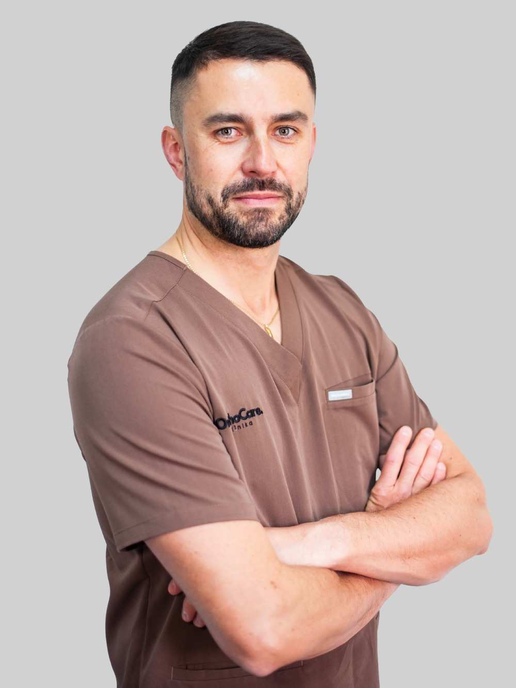

lek. Grzegorz Glazer
Specjalista ortopedii i traumatologii narządu ruchu
Dr Grzegorz Glazer jest absolwentem Uniwersytetu Medycznego w Lublinie, który ukończył w 2011 roku z wyróżnieniem. Po ukończeniu stażu rozpoczął pracę w Klinice Ortopedii i Traumatologii SPSK nr 4 w Lublinie, gdzie pracuje do dziś jako starszy asystent. W 2019 roku uzyskał tytuł doktora nauk medycznych, broniąc rozprawy pt. "Wpływ jonów i drobin metali na trwałość protezoplastyki metal-metal".
Specjalizuje się w diagnostyce i leczeniu schorzeń stawu biodrowego i kolanowego, ze szczególnym uwzględnieniem kwalifikacji do endoprotezoplastyki. Posiada bogate doświadczenie w prowadzeniu pacjentów po zabiegach wszczepienia endoprotez, monitorowaniu ich stanu klinicznego oraz leczeniu powikłań. W swojej praktyce wykorzystuje również ultrasonografię ortopedyczną.
Od lat uczestniczy w ogólnopolskich i międzynarodowych konferencjach naukowych, a także kursach specjalistycznych z zakresu protezoplastyki i nowoczesnych metod leczenia zachowawczego. W codziennej pracy wyróżnia się spokojem, precyzją i kompleksowym podejściem do pacjenta.
